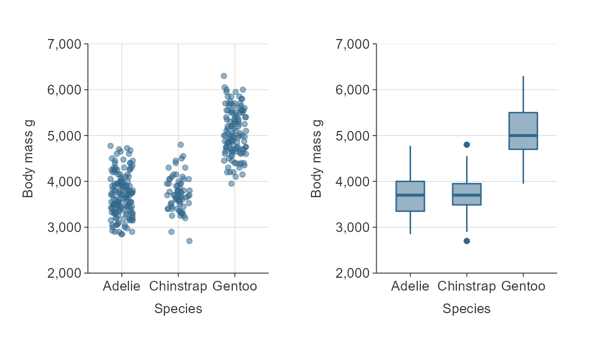
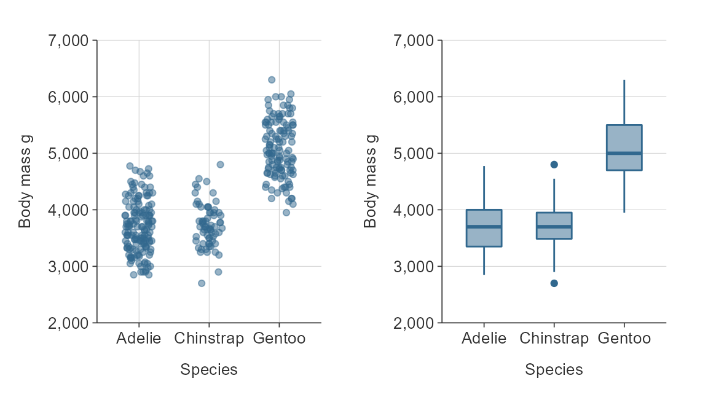

Purpose
simplevis is a package of wrapper functions that aim to make ggplot2 visualisation easier and quicker.
Visualisation family types
simplevis supports the following families of visualisation type:
bar (i.e vertical bar)
plot_data <- storms %>% group_by(year) %>% summarise(wind = mean(wind)) gg_bar(plot_data, year, wind)

point
gg_point(iris, Sepal.Width, Sepal.Length)

line
plot_data <- storms %>% group_by(year) %>% summarise(wind = mean(wind)) gg_line(plot_data, year, wind)

- boxplot
gg_boxplot(storms, year, wind)

hbar (i.e horizontal bar)
plot_data <- ggplot2::diamonds %>% group_by(cut) %>% summarise(price = mean(price)) gg_hbar(plot_data, price, cut)

- sf (short for simple features map)
gg_sf(example_sf_point, borders = nz)

Colouring, facetting, neither or both
Each visualisation family generally has 4 functions.
The function name specifies whether or not a visualisation is to be coloured by a variable (*_col()), facetted by a variable (*_facet()), or neither (*()) or both of these (*_col_facet()).
Colouring by a variable means that different values of a selected variable are to have different colours. Facetting means that different values of a selected variable are to have their facet.
A *() function such gg_point() requires only a dataset, an x variable and a y variable.
gg_point(penguins, bill_length_mm, body_mass_g)

A *_col() function such gg_point_col() requires only a dataset, an x variable, a y variable, and a colour variable.
gg_point_col(penguins, bill_length_mm, body_mass_g, sex)

A *_facet() function such gg_point_facet() requires only a dataset, an x variable, a y variable, and a facet variable.
gg_point_facet(penguins, bill_length_mm, body_mass_g, species)

A *_col_facet() function such gg_point_col_facet() requires only a dataset, an x variable, a y variable, a colour variable, and a facet variable.
gg_point_col_facet(penguins, bill_length_mm, body_mass_g, sex, species)

Data is generally plotted with a stat of identity, which means data is plotted as is. Only for boxplot, there is a different default stat of boxplot, which means data will be transformed to boxplot statistics.
_sf functions for maps differ slightly, which is discussed further below.
Titles
Customise titles with title, subtitle, x_title, y_title and caption arguments.
gg_point_col(penguins, bill_length_mm, body_mass_g, species, title = "Adult penguin mass by bill length and species", subtitle = "Palmer station, Antarctica", x_title = "Bill length (mm)", y_title = "Body mass (g)", col_title = "Penguin species", caption = "Source: Gorman KB, Williams TD, Fraser WR (2014)")

Defaults titles are:
- no title, subtitle or caption
- x, y and colour titles are converted to sentence case using the
snakecase::to_sentence_casefunction. You can turn this transformation off to use variable names as is usingx_title = ggplot2::waiver()or likewise fory_titleandcol_title. You can also request no x_title usingx_title = ""or likewise fory_titleandcol_title.
gg_point_col(penguins, bill_length_mm, body_mass_g, species)

Colour palettes.
Change the colour palette by supplying a vector of colours to the pal argument.
gg_point(iris, Sepal.Width, Sepal.Length, pal = "#e7298a")

Scale transformations
simplevis makes it easy to make easy scale transformations.
These use consistent prefixes based on x_*, y_*, col_* or facet_*, and as such the autocomplete can help identify what you need.
Some examples of transformations available are:
-
*_nato quickly not include NA observations -
*_labelsto adjust labels for any x, y, col or facet scale -
*_zeroto start at zero for numeric x or y scales -
*_pretty_nfor the number of numeric bins of breaks for the x or y scale to aim for -
*_revto reverse the order of categorical x, y or col scales in bars -
*_expandto add padding to an x or y scale.
plot_data <- storms %>% group_by(year) %>% summarise(wind = mean(wind)) gg_line(plot_data, year, wind, x_pretty_n = 4, x_labels = function(x) stringr::str_sub(x, 3, 4), y_labels = scales::comma_format(accuracy = 0.1), y_zero = T, y_pretty_n = 10, y_expand = c(0, 2))

gg_point_col(penguins, bill_length_mm, body_mass_g, sex, col_na = FALSE)

sf maps
simplevis provides simple feature (sf) maps (i.e. maps with point, line or polygon features).
These functions work in the same way as the ggplot2 graph functions, but with the following noteworthy differences:
- Data must be an
sfobject - Data must be of
POINT/MULTIPOINT,LINESTRING/MULTILINESTRING, orPOLYGON/MULTIPOLYGONgeometry type - Data must have a coordinate reference system (CRS) defined
- No
x_varandy_varvariables are required - Borders can added to maps by providing an
sfobject to thebordersargument.
A couple of example sf objects are provided with the package for learning purposes: example_sf_point and example_sf_polygon.
gg_sf_col(example_sf_point, trend_category, size_point = 0.5, pal = c("#4575B4", "#D3D3D3", "#D73027"))

The borders argument allows for the user to provide an sf object as context to the map (e.g. a coastline or administrative bounrdaries). An sf object of the New Zealand coastline has been provided for learning purposes with the package.
gg_sf_col(example_sf_point, trend_category, borders = nz, size_point = 0.5, pal = c("#4575B4", "#D3D3D3", "#D73027"))

Simplevis also provides leaflet and leaflet_sf functions, which work in a similar way.
leaflet_sf_col(example_sf_point, trend_category, pal = c("#4575B4", "#D3D3D3", "#D73027"))
Supported variable classes
variable types supported by the different groups of functions are outlined below.
A stat of identity refers to the value being plotted as it is. A stat of boxplot refers to boxplot statistics being calculated from the data, and these plotted.
tibble::tribble( ~type, ~data, ~x_var, ~y_var, ~col_var, ~facet_var, ~stat, "bar", "tibble or data.frame", "Any*", "Numeric", "Categorical or numeric", "Categorical", "Identity", "hbar", "tibble or data.frame", "Numeric", "Any*", "Categorical or numeric", "Categorical", "Identity", "line", "tibble or data.frame", "Any*", "Numeric", "Categorical or numeric", "Categorical", "Identity", "point", "tibble or data.frame", "Any*", "Numeric", "Categorical or numeric", "Categorical", "Identity", "boxplot", "tibble or data.frame", "Any*", "Numeric", "Categorical", "Categorical", "Boxplot or identity", "sf", "sf", NA, NA, "Categorical or numeric", "Categorical", "Identity", ) %>% DT::datatable()
- If numeric, date or datetime; variable values are bins that are mutually exclusive and equidistant. Required input.
ggplotly interactive visualisation
All ggplot objects can be converted into interactive html objects using ggplotly. You can simply wrap the plot object in plotly::ggplotly(). The plotly_camera function removes plotly widgets other than the camera to keep things tidy.
plot <- gg_point_col(penguins, bill_length_mm, body_mass_g, species) plotly::ggplotly(plot) %>% plotly_camera()
simplevis also offers more customisability for making tooltips (i.e. hover values).
The mutate_text functions produces a variable named text that can be added into the simplevis function through text_var, which access the ggplot text aesthetic.
These variables and values can then be seen in tooltips in the ggplotly object if tooltip = "text" is added to the function.
The mutate_text creates a tooltip column of all variables and values in the data by default, but you can express a subset of these by specifying a vector of variable names to the function.
Note that this function converts column names to sentence case using the snakecase::to_sentence_case function.
plot <- gg_point_col(penguins, bill_length_mm, body_mass_g, species) plotly::ggplotly(plot) %>% plotly_camera() plot_data <- penguins %>% mutate_text() plot <- gg_point_col(plot_data, bill_length_mm, body_mass_g, species, text_var = text, font_family = "Helvetica") plotly::ggplotly(plot, tooltip = "text") %>% plotly_camera()
Output objects and adding layers
All gg_* and leaflet_* wrapper functions produce ggplot or leaflet objects.
This means layers can be added to the functions in the same way you would a ggplot2 or leaflet object.
Note you need to add all aesthetics to any additional layers.
gg_point_col(penguins, bill_length_mm, body_mass_g, species) + geom_smooth(aes(bill_length_mm, body_mass_g, col = species))

This means you can facet by more than one variable, provided that you are not using a position of “stack”.
plot_data <- penguins %>% group_by(species, sex, island) %>% summarise(body_mass_g = mean(body_mass_g, na.rm = TRUE)) %>% filter(!is.na(sex)) gg_bar(plot_data, sex, body_mass_g, width = 0.66, y_pretty_n = 3, x_na = FALSE) + facet_grid(rows = vars(species), cols = vars(island), labeller = as_labeller(snakecase::to_sentence_case))

Further information
For further information, see the articles on the website.